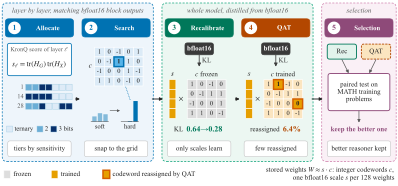

Grading a compressed reasoning model by perplexity is like grading a long essay by checking each word against a dictionary. Every word can pass while the writer circles the same paragraph and never reaches a conclusion. ThinkBit grades by whether the essay finishes and lands on the right answer, and chooses its model that way.
압축된 추론 모델을 perplexity로 평가하는 것은 긴 글을 단어마다 사전과 대조해 채점하는 것과 같다. 단어는 모두 통과해도 글쓴이는 같은 문단을 맴돌다 결론에 이르지 못할 수 있다. ThinkBit은 글이 끝까지 가서 맞는 답에 닿는지로 채점하고, 그 기준으로 모델을 고른다.
How it works: five stages around one simple format작동 방식은 단순한 형식 하나와 다섯 단계
Every weight is an integer codeword times a shared bf16 scale, so dequantizing is one multiply; the stages only decide which integers and scales to keep.
모든 가중치는 정수 코드워드에 공유 bf16 스케일을 곱한 값이라 역양자화는 곱셈 한 번이다. 다섯 단계는 어떤 정수와 스케일을 남길지만 정한다.

- Allocate and search.배정과 탐색.A Hessian sensitivity score gives each layer a ternary, 2-bit, or 3-bit tier, and a block-wise search picks the integer codewords.헤시안 기반 민감도 점수로 층마다 3값, 2비트, 3비트 중 하나를 배정하고, 블록 단위 탐색으로 정수 코드워드를 고른다.
- Recalibrate, then QAT.재보정 후 QAT.With codewords frozen, only scales and norm gains learn to match the bf16 output; then a short QAT moves a few codewords one grid step.코드워드를 고정한 채 스케일과 정규화 이득만 bf16 출력에 맞춰 학습한다. 이어서 짧은 QAT가 일부 코드워드를 한 칸씩 옮긴다.
- Select by reasoning.추론으로 선택.Both checkpoints answer 313 MATH training problems four times each; only closed traces count, and a paired test keeps the better one.두 체크포인트가 MATH 학습 문제 313개에 네 번씩 답하고, 닫힌 추론만 인정하며, 짝 검정으로 더 나은 쪽을 남긴다.
Key point: 2-bit models fail by not finishing핵심은 2비트 모델이 끝맺지 못해서 틀린다는 것
On Qwen3-1.7B, bf16 closes 99.2% of its reasoning traces, while 2-bit checkpoints close only 55–88%. Recalibrating scales mainly raises this closing rate.
Qwen3-1.7B에서 bf16은 추론의 99.2%를 닫지만, 2비트 체크포인트는 55~88%만 닫는다. 스케일 재보정은 주로 이 닫힘 비율을 올린다.
Results: more reasoning per byte결과는 바이트당 더 나은 추론
Compared by whole-file size, the selected 2-bit Qwen3-1.7B reasons far better than every other file of similar size.
파일 전체 크기로 비교하면, 선택된 2비트 Qwen3-1.7B가 비슷한 크기의 다른 모든 파일보다 훨씬 잘 추론한다.
At 8B the lead holds on the hardest benchmark too, though AIME still trails bf16 by a wide margin.
8B에서도 가장 어려운 벤치마크까지 앞서지만, AIME는 여전히 bf16과 차이가 크다.
| File | GB | MATH-500 | AIME@16 |
|---|---|---|---|
| bf16 | 16.4 | 96.9 | 71.2 |
| ThinkBit | 2.08 | 92.2 | 46.9 |
| Ternary Bonsai | 2.18 | 83.7 | 24.4 |
| GGUF UD-IQ2_XXS | 2.61 | 35.2 | 1.0 |
| GGUF Q2_K | 3.28 | 91.1 | 45.6 |
| EfficientQAT | 4.35 | 71.9 | 10.3 |
When you quantize a reasoning model, track the share of traces that close </think> and select checkpoints on sampled reasoning, not perplexity. Retraining only the scales against the bf16 output is cheap and recovers much of the loss.추론 모델을 양자화할 때는 </think>로 닫히는 추론의 비율을 지켜보고, 체크포인트는 perplexity가 아니라 샘플링한 추론 결과로 고르자. 스케일만 bf16 출력에 맞춰 다시 학습하는 것은 싸고, 손실의 상당 부분을 되찾는다.
Selection uses math only, and code does not recover (HumanEval 25.6 vs 41.5 at 1.7B), so tool use is untested. Speed comes from 4-bit containers because the paper has no 2-bit kernel yet, and some 2-bit traces still never finish.선택 시험은 수학만 쓰고 코드는 회복되지 않으며(1.7B에서 HumanEval 25.6 대 41.5), 도구 사용은 시험하지 않았다. 속도는 논문에 아직 2비트 커널이 없어 4비트 컨테이너로 잰 값이고, 일부 2비트 추론은 여전히 끝나지 않는다.